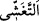
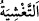

etseniz de sizin için birdir.
194. (Ey kâfirler!) Allah’ı bırakıp da taptıklarınız sizler gibi kullardır. (Onların
tanrılığı hakkında iddianızda) doğru iseniz, onları çağırın da size cevap versinler!
195. Onların yürüyecekleri ayakları mı var, yoksa tutacakları elleri mi var veya
görecekleri gözleri mi var (neleri var)? De ki: “Ortaklarınızı çağırın, sonra bana
(istediğiniz) tuzağı kurun ve bana göz bile açtırmayın!”
196. Şüphesiz ki, benim koruyanım Kitab’ı indiren Allah’tır. Ve O bütün salih
kullarını görüp gözetir.
197. Allah’ın dışında taptıklarınızın ne size yardıma güçleri yeter ne de
kendilerine yardım edebilirler.
198. Onları doğru yola çağırmış olsanız işitmezler. Ve onları sana bakar görürsün,
oysa onlar görmezler.
“Sizi”n hepinizi “bir tek candan” yalnız Âdem’den hiçbir yönden başkasının
müdâhelesi olmaksızın “yaratan” Allah Teâlâ’dır. Bütün nefisler, bir tek nefisten, yani
Âdem (a.s.)’ın nefsinden yaratıldığı gibi ruhlar da bir tek ruhtan, Muhammed (s.a.v.)’in
ruhundan yaratılmıştır. Âdem (a.s.) beşerin babası olduğu gibi Muhammed (a.s.) da
ruhların babası olmuştur. Çünkü Rasûlullah (s.a.v.): “Benim size göre durumum
babanın çocuğuna göre durumu gibidir.”[137] ve “Allah’ın ilk yarattığı şey benim
ruhumdur.”[138] buyurmuştur. Her cinsten ilk yaratılan şey ise o cinsten diğer canlıların
ve bitkilerin yaratılması için bir kaynak teşkil eder.
Sûret bakımından Âdem’den doğmuşsam da
Hakikatte atasının atasıyım ben
“Ondan da” o bir tek nefsin, yani Âdem’in cinsinden “yanında huzur bulsun diye
eşini” Havva’yı “yaratan O’dur.” “Allah Teâlâ’nın Havva’yı Âdem (a.s.)’ın kaburga
kemiklerinden birinden yarattığına”[139] dair rivayete göre Havva’nın Âdem (a.s.)’ın
cinsinden değil, cesedinden yaratıldığı da söylenmiştir. Fakat birinci görüş daha
uygundur. Çünkü ayette belirtilen eşin yaratılmasındaki gayenin gerçekleşmesi için
cinsiyet, kendisinden bir parça olmasından daha tesirlidir. Bu gaye ise ilk nefis olan
Âdem(a.s.)’ın zevcesi ile ünsiyet edip gerçekleşecek olan izdivac ile hakiki huzura
kavuşmasıdır.
“Eşi ile birleşince” “__WORD__” ve “__WORD__” aslında örtmek demektir. Burada cinsî
münâsebetten kinaye olarak kullanılmıştır. Çünkü cinsî münâsebet sırasında erkek
kadının üzerinde bulunarak onu örter.
Başlangıçta “eşi hafif bir yük yüklendi.” Çocuk nutfe (sperm), alaka (kan pıhtısı) ve
mudğa (et parçası) durumunda iken, daha sonraki merhalelere göre anneye daha hafif
gelir.
Anne “Onu bir müddet taşıdı.” Önceden yaptığı gibi oturdu, kalktı, aldı, bıraktı ve